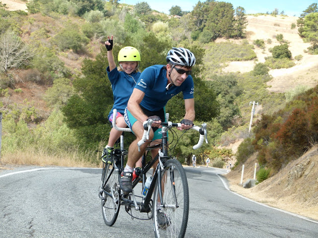

|
 |
|  |
| a certain Mr. Colwell having WAY too much fun. (Luther Pugh) |
It was a gorgeous opening day for Low-Key 2012!
After getting strung out on leaving Steven's Creek Reservoir, the group hit the base of Montebello in full force as a lead group soon formed. It was from this group that super-junior Adrien Costa of the Garmin development team made his move, soloing in for the win, coming oh-so-close to the Low-Key record of 25:32 set by Chris Phipps in 2010. Fellow junior 17-year-old Tim Aiken was second, with Rob Manchester the first of the oldies finishing a strong third. Lisa Penzel, riding this year for Team Brown Zone, was a solid first in the women's group with Lynn Sestak second and Helen Casabona third, while we had an excellent group of three tandems to open up the new tandem scoring division. And in Hybrid-Electric, Bill Bushnell set a new Low-Key record with his time of 17:24, beating his standing record of 18:10 from 2010.
In the all-important team contest, Brown Zone has taken a commanding lead over SJBC and Western Wheelers, with Google making a strong showing in fourth. Team "Pan y Agua" finished 6th: commentary on the Brown Zone refrigerator? And special note to the three-generation Team Colwell, which finished four riders, or five if you count the bear.
We had a super-crack group of well-drilled volunteers who really made things go smoothly today, with a special thanks to the results squad. With a start like today, you know it's going to be an excellent Low-Key season!
Strava T-shirt qualifiers indicated with orange background. Note riders can only qualify once per series, so may not be listed even if they beat the target time for this week.
| pl | # | name | team | cat | time | mph | fph | score |
|---|---|---|---|---|---|---|---|---|
| 1 | 129 | Lisa Penzel | The Brown Zone | 45+ | 33:14 | 9.57 | 3503 | 121.88 |
| 2 | 146 | Lynn Sestak | The Brown Zone | 50+ | 33:58 | 9.36 | 3427 | 119.19 |
| 3 | 47 | Helen Casabona | Pen Velo/Pomodoro | 50+ | 34:52 | 9.12 | 3338 | 116.05 |
| 4 | 72 | Susan g d | susan g d | 40+ | 35:14 | 9.03 | 3304 | 114.81 |
| 5 | 113 | Ginger Kroft | San Jose Bike Club | 40+ | 35:41 | 8.91 | 3262 | 113.34 |
| 6 | 79 | Lisa Emmerich | Sr's & Mr's of No Mercy | 50+ | 40:28 | 7.86 | 2876 | 99.66 |
| 7 | 91 | Hannah Hausman | Hausbert | 20+ | 42:34 | 7.47 | 2735 | 94.64 |
| 8 | 50 | Alison Chaiken | Sr's & Mr's of No Mercy | 50+ | 49:54 | 6.37 | 2333 | 80.45 |
| 9 | 94 | Christine Holmes | Low-Key | 45+ | 51:05 | 6.23 | 2279 | 78.55 |
| 10 | 4 | Pat Parseghian | 50+ | 57:32 | 5.53 | 2023 | 69.56 | |
| 11 | 42 | Judy Colwell & Rufus | Team Colwell | 70+ | 60:02 | 5.30 | 1939 | 66.60 |
reference time for division Women = 40:19
| pl | # | name | team | cat | time | mph | fph | score |
|---|---|---|---|---|---|---|---|---|
| 1 | 69 | Adrien Costa | Slipstream-Craddock Jr. Development | Junior | 25:41 | 12.38 | 4532 | 130.94 |
| 2 | 22 | Tim Aiken | Bear Development Team | 17-18 | 27:16 | 11.66 | 4269 | 123.18 |
| 3 | 120 | Rob Manchester | 35+ | 27:23 | 11.61 | 4251 | 122.64 | |
| 4 | 38 | Rich Brown | The Brown Zone | 35+ | 27:28 | 11.58 | 4238 | 122.26 |
| 5 | 131 | Josh Pizzica | Gene-Solve/Etxea | 35+ | 27:28 | 11.58 | 4238 | 122.26 |
| 6 | 149 | Daryl Spano | San Jose Bike Club | 45+ | 27:28 | 11.58 | 4238 | 122.26 |
| 7 | 59 | David Collet | Unattached | 40+ | 27:30 | 11.56 | 4233 | 122.11 |
| 8 | 125 | Alan Nevin | IronData Thirsty Bear | 40+ | 27:37 | 11.51 | 4215 | 121.58 |
| 9 | 112 | Alex Kramer | Western Wheelers | 35+ | 27:42 | 11.48 | 4202 | 121.21 |
| 10 | 95 | Jared Hudson | SquadraSF | 30+ | 28:02 | 11.34 | 4152 | 119.74 |
| 11 | 71 | Robby Cuthbert | Hausbert | 20+ | 28:41 | 11.09 | 4058 | 116.96 |
| 12 | 86 | James Enright | Dolce Vita Cycling | 28:44 | 11.07 | 4051 | 116.76 | |
| 13 | 44 | Ciaran Byrne | Sr's & Mr's of No Mercy | 40+ | 28:46 | 11.05 | 4046 | 116.62 |
| 14 | 152 | Holger Steinbach | IronData Thirsty Bear | 45+ | 28:46 | 11.05 | 4046 | 116.62 |
| 15 | 172 | Morgan Raines | Bike Trip/Symantec | 40+ | 28:48 | 11.04 | 4042 | 116.48 |
| 16 | 70 | Andy Crews | Diablo | 40+ | 29:44 | 10.70 | 3915 | 112.74 |
| 17 | 154 | Todd Studenicka | San Jose Bike Club | 40+ | 29:45 | 10.69 | 3913 | 112.68 |
| 18 | 162 | Ben Weir | Western Wheelers | 30+ | 29:50 | 10.66 | 3902 | 112.36 |
| 19 | 92 | Rich Hill | LGBRC | 45+ | 30:05 | 10.57 | 3869 | 111.40 |
| 20 | 7 | James Porter | Western Wheelers | 3 | 30:06 | 10.56 | 3867 | 111.34 |
| 21 | 121 | Twain Mein | El Nor | 45+ | 30:14 | 10.52 | 3850 | 110.84 |
| 22 | 157 | Nils Tikkanen | Honey Badger | 30:25 | 10.45 | 3827 | 110.16 | |
| 23 | 117 | Jeff Lin | 40+ | 30:27 | 10.44 | 3823 | 110.03 | |
| 24 | 155 | Joseph Sullivan | San Jose Bike Club | 35+ | 30:33 | 10.41 | 3810 | 109.66 |
| 25 | 49 | Nathan Cauffman | 30+ | 30:34 | 10.40 | 3808 | 109.60 | |
| 26 | 151 | Tom Stanis | 35+ | 30:39 | 10.38 | 3798 | 109.30 | |
| 27 | 35 | Blue Brown | The Brown Zone | Meat Based | 30:48 | 10.32 | 3779 | 108.75 |
| 28 | 80 | Joe Fant | The Brown Zone | 50+ | 31:00 | 10.26 | 3755 | 108.04 |
| 29 | 108 | Joe Karbowski | 30+ | 31:08 | 10.21 | 3739 | 107.57 | |
| 30 | 175 | Alexander Komlik | San Jose Bike Club | 45+ | 31:19 | 10.15 | 3717 | 106.92 |
| 31 | 97 | Martin Hyland | Western Wheelers | 55+ | 31:24 | 10.13 | 3707 | 106.63 |
| 32 | 142 | Naoto Sato | 45+ | 31:26 | 10.12 | 3703 | 106.52 | |
| 33 | 104 | Anthony Jawad | 25+ | 31:38 | 10.05 | 3680 | 105.83 | |
| 34 | 41 | Ron Brunner | The Brown Zone | 40+ | 31:45 | 10.02 | 3666 | 105.43 |
| 35 | 171 | Russell Stevens | ACTC | 40+ | 31:49 | 9.99 | 3658 | 105.20 |
| 36 | 106 | Dane Johnson | 25+ | 31:54 | 9.97 | 3649 | 104.92 | |
| 37 | 88 | Nick Gillett | Pen Velo/Pomodoro | 25+ | 32:04 | 9.92 | 3630 | 104.37 |
| 38 | 37 | Dino Brown | The Brown Zone | Dual Suspension Beast | 32:07 | 9.90 | 3624 | 104.20 |
| 39 | 78 | Bill Dvorak | 55+ | 32:11 | 9.88 | 3617 | 103.98 | |
| 40 | 36 | Bobby Brown | The Brown Zone | 50+ | 32:34 | 9.76 | 3574 | 102.73 |
| 41 | 75 | Giles Douglas | 35+ | 32:45 | 9.71 | 3554 | 102.14 | |
| 42 | 136 | Doug Reynolds | Pan y Agua | 60+ | 32:46 | 9.70 | 3552 | 102.09 |
| 43 | 144 | Jason Schmidt | 40+ | 32:50 | 9.69 | 3545 | 101.88 | |
| 44 | 132 | Ryan Powell | Team Joe Karbowski | 35+ | 33:06 | 9.61 | 3517 | 101.04 |
| 45 | 130 | Jim Perreira | 45+ | 33:10 | 9.59 | 3510 | 100.83 | |
| 46 | 138 | Dave Rossow | 40+ | 33:22 | 9.53 | 3489 | 100.21 | |
| 47 | 110 | Franz Kelsch | Pan y Agua | 65 Almost | 33:41 | 9.44 | 3456 | 99.25 |
| 48 | 39 | Slow Brown | The Brown Zone | Two Flat Tires | 33:48 | 9.41 | 3444 | 98.90 |
| 49 | 161 | Alan Weatherall | San Jose Bike Club | 50+ | 33:51 | 9.39 | 3439 | 98.75 |
| 50 | 46 | Gonzalo Carrillo | Team Fremont FFBC p/b Chipotle | 45+ | 33:59 | 9.36 | 3425 | 98.35 |
| 51 | 176 | Carmelo Rios | Plus 3 | 50+ | 34:07 | 9.32 | 3412 | 97.96 |
| 52 | 81 | Rick Ferrell | Bike Trip/Symantec | 50+ | 34:21 | 9.26 | 3389 | 97.28 |
| 53 | 20 | Ron Abidog | San Jose Bike Club | 40+ | 34:29 | 9.22 | 3376 | 96.90 |
| 54 | 52 | Eric Chao | Nvidia | 34:31 | 9.21 | 3372 | 96.80 | |
| 55 | 165 | Jim Williams | Pan y Agua | 60+ | 34:44 | 9.16 | 3351 | 96.18 |
| 56 | 133 | Thomas Preisler | LGBRC | 55+ | 34:49 | 9.13 | 3343 | 95.95 |
| 57 | 98 | Brandon Iles | 30+ | 34:49 | 9.13 | 3343 | 95.95 | |
| 58 | 114 | Mark LaForge | SSL Cycling Club | 50+ | 34:58 | 9.09 | 3329 | 95.53 |
| 59 | 118 | Justin Lucke | LGBRC | Plant Based | 35:20 | 9.00 | 3294 | 94.52 |
| 60 | 141 | Nico Sallembien | 35+ | 35:25 | 8.98 | 3287 | 94.29 | |
| 61 | 156 | Toshi Tajima | 45+ | 35:25 | 8.98 | 3287 | 94.29 | |
| 62 | 96 | Abid Hussain | 40+ | 35:33 | 8.95 | 3274 | 93.93 | |
| 63 | 218 | Terrance Kloeckl | 50+ | 35:33 | 8.95 | 3274 | 93.93 | |
| 64 | 159 | Plamen Velikov | SLACer | 35:38 | 8.92 | 3267 | 93.70 | |
| 65 | 43 | Scott Byer | 45+ | 35:39 | 8.92 | 3265 | 93.66 | |
| 66 | 119 | Beckett Madden-Woods | 30+ | 35:46 | 8.89 | 3254 | 93.35 | |
| 67 | 82 | Matt Feuer | 55+ | 35:51 | 8.87 | 3247 | 93.12 | |
| 68 | 45 | Pat Callahan | Quadzilla Racing | 40+ | 36:00 | 8.83 | 3233 | 92.73 |
| 69 | 89 | Don Grijalva | San Jose Bike Club | 60+ | 36:03 | 8.82 | 3229 | 92.60 |
| 70 | 100 | Tim Irvine | LGBRC | 40+ | 36:04 | 8.82 | 3227 | 92.55 |
| 71 | 173 | John Kastel | Death Valley | 50+ | 36:14 | 8.78 | 3213 | 92.12 |
| 72 | 74 | David Delucchi | 50+ | 36:25 | 8.73 | 3196 | 91.64 | |
| 73 | 135 | Mihai R. | 30+ | 36:33 | 8.70 | 3185 | 91.30 | |
| 74 | 83 | Dave Fitch | San Jose Bike Club | 70+ | 36:46 | 8.65 | 3166 | 90.75 |
| 75 | 177 | Bren Darrow | Oakland | 25+ | 36:47 | 8.65 | 3164 | 90.71 |
| 76 | 55 | Philip Clark | 25+ | 36:50 | 8.63 | 3160 | 90.58 | |
| 77 | 31 | George Bonanto | Clydesdale | 36:51 | 8.63 | 3159 | 90.54 | |
| 78 | 85 | Danny Froeming | 45+ | 37:01 | 8.59 | 3145 | 90.13 | |
| 79 | 77 | Frank Drobot | Western Wheelers | 60+ | 37:22 | 8.51 | 3115 | 89.26 |
| 80 | 67 | Richard Contreras | Team Rhus | 55+ | 37:50 | 8.41 | 3077 | 88.14 |
| 81 | 84 | Stephen Fong | CyclePath Racing | 45+ | 37:59 | 8.37 | 3065 | 87.78 |
| 82 | 127 | Bart Niechwiej | 35+ | 38:02 | 8.36 | 3060 | 87.66 | |
| 83 | 23 | Alon Albert | 45+ | 38:02 | 8.36 | 3060 | 87.66 | |
| 84 | 40 | Rich Brunner | Santa Clara | 40+ | 38:22 | 8.29 | 3034 | 86.89 |
| 85 | 53 | Rolling Chicane | 40+ | 38:30 | 8.26 | 3023 | 86.58 | |
| 86 | 170 | Craig Peters | LGBRC | 40+ | 38:45 | 8.21 | 3004 | 86.01 |
| 87 | 58 | Kevin Colagiovanni | Team DUD | 25+ | 38:47 | 8.20 | 3001 | 85.93 |
| 88 | 147 | Jeff Shute | 30+ | 38:50 | 8.19 | 2997 | 85.82 | |
| 89 | 48 | Peter Cathcart | San Jose Bike Club | 50+ | 39:00 | 8.15 | 2985 | 85.44 |
| 90 | 164 | Mike Wilkins | team batson | 50+ | 39:02 | 8.15 | 2982 | 85.37 |
| 91 | 169 | Nic Brummell | Atlas | 50+ | 39:04 | 8.14 | 2980 | 85.30 |
| 92 | 143 | Wink Saville | 60+ | 39:34 | 8.04 | 2942 | 84.19 | |
| 93 | 102 | Tom Jakaby | Buycell/Jakaby Engineering | 50+ | 39:43 | 8.01 | 2931 | 83.87 |
| 94 | 34 | Mark Breslauer | Western Wheelers | 55+ | 40:01 | 7.95 | 2909 | 83.23 |
| 95 | 160 | Greg Watson | Palo Verde Velo | 45+ | 40:03 | 7.94 | 2906 | 83.16 |
| 96 | 76 | Pierre Doussiere | 50+ | 40:34 | 7.84 | 2869 | 82.07 | |
| 97 | 124 | Robert Navasca | Pedalista | 40+ | 40:46 | 7.80 | 2855 | 81.66 |
| 98 | 26 | Bernard Bell | 50+ | 41:01 | 7.75 | 2838 | 81.15 | |
| 99 | 174 | Norbert Kappel | San Jose Bike Club | 55+ | 41:18 | 7.70 | 2818 | 80.58 |
| 100 | 66 | Miles Contreras | Team Rhus | <18 | 43:24 | 7.33 | 2682 | 76.60 |
| 101 | 123 | Lance Mier | CROSSFIT San Jose | 40+ | 43:32 | 7.30 | 2674 | 76.36 |
| 102 | 158 | S.V. Vasudevan | 44:17 | 7.18 | 2629 | 75.04 | ||
| 103 | 68 | Alex Cortez | Team Fremont FFBC p/b Chipotle | 40+ | 44:28 | 7.15 | 2618 | 74.72 |
| 104 | 60 | Fernando Colmenares | Team Fremont FFBC p/b Chipotle | 65+ | 45:08 | 7.05 | 2579 | 73.60 |
| 105 | 54 | Barry Burr | Barry Beams Bike Lighting | 50+/ Cat 4 | 45:50 | 6.94 | 2540 | 72.45 |
| 106 | 126 | Ronald Ng | 45+ | 47:05 | 6.75 | 2472 | 70.48 | |
| 107 | 29 | Sachin Bhatia | 30+ | 47:08 | 6.75 | 2470 | 70.41 | |
| 108 | 101 | Todd Jackson | 30+ | 47:19 | 6.72 | 2460 | 70.13 | |
| 109 | 148 | Gregory P. Smith | 35+ | 48:16 | 6.59 | 2412 | 68.72 | |
| 110 | 63 | Skyler Colwell | Team Colwell | Junior | 49:42 | 6.40 | 2342 | 66.69 |
| 111 | 168 | Daniel Yang | 40+ | 49:59 | 6.36 | 2329 | 66.31 | |
| 112 | 30 | Gordon Block | OLD (Age 64) | 50:03 | 6.35 | 2326 | 66.22 | |
| 113 | 90 | Bob Gumaer | UID | 55+ | 50:57 | 6.24 | 2285 | 65.02 |
| 114 | 137 | Wayne Richardson | 50+ | 51:47 | 6.14 | 2248 | 63.95 | |
| 115 | 21 | Michael Ahern | LGBRC | 45+ | 51:53 | 6.13 | 2243 | 63.83 |
| 116 | 57 | John Clarke | 40+ | 53:54 | 5.90 | 2160 | 61.39 |
reference time for division Men = 33:26
| pl | # | name | team | cat | time | mph | fph | score |
|---|---|---|---|---|---|---|---|---|
| 1 | 32 | Dan Brehmer | SLACer | 45+ | 41:01 | 7.75 | 2838 | 89.73 |
| 33 | Winnie Lam Brehmer | SLACer | Stoker | |||||
| 2 | 12 | Will von Kaenel | LGBRC | 50+ | 42:37 | 7.46 | 2731 | 86.28 |
| 13 | Lynn von Kaenel | LGBRC | Stoker | |||||
| 3 | 61 | Hadley Colwell | Team Colwell | Junior | 47:22 | 6.71 | 2457 | 77.45 |
| 64 | Tracy Colwell | Team Colwell | 40+ |
| pl | # | name | team | cat | time | mph | fph | score |
|---|---|---|---|---|---|---|---|---|
| 1 | 6 | Bill Bushnell | Low-Key | It's Mostly The Bike | 17:26 | 18.24 | 6677 | 111.71 |
reference time for division Hybrid Electric = 19:25
| pl | team | score | riders |
|---|---|---|---|
| 1 | The Brown Zone | 363.33 | Rich Brown, Blue Brown, Joe Fant, Ron Brunner, Dino Brown, Bobby Brown, Lisa Penzel, Slow Brown, Lynn Sestak |
| 2 | San Jose Bike Club | 348.28 | Daryl Spano, Todd Studenicka, Joseph Sullivan, Alexander Komlik, Alan Weatherall, Ron Abidog, Ginger Kroft, Don Grijalva, Dave Fitch, Peter Cathcart, Norbert Kappel |
| 3 | Western Wheelers | 344.91 | Alex Kramer, Ben Weir, James Porter, Martin Hyland, Frank Drobot, Mark Breslauer |
| 4 | 329.49 | Nils Tikkanen, Jeff Lin, Tom Stanis, Anthony Jawad, Dane Johnson, Giles Douglas, Brandon Iles, Scott Byer, Beckett Madden-Woods, Mihai R., Philip Clark, George Bonanto, Bart Niechwiej, Alon Albert, Jeff Shute, Wink Saville, Todd Jackson, Gregory P. Smith, John Clarke, Pat Parseghian | |
| 5 | LGBRC | 301.87 | Rich Hill, Thomas Preisler, Justin Lucke, Tim Irvine, Craig Peters, Will von Kaenel, Lynn von Kaenel, Michael Ahern |
| 6 | Pan y Agua | 297.52 | Doug Reynolds, Franz Kelsch, Jim Williams |
| 7 | Sr's & Mr's of No Mercy | 296.73 | Ciaran Byrne, Lisa Emmerich, Alison Chaiken |
| 8 | SLACer | 273.15 | Plamen Velikov, Dan Brehmer, Winnie Lam Brehmer |
| 9 | Team Fremont FFBC p/b Chipotle | 246.68 | Gonzalo Carrillo, Alex Cortez, Fernando Colmenares |
| 10 | IronData Thirsty Bear | 238.20 | Alan Nevin, Holger Steinbach |
| 11 | Team Colwell | 221.60 | Judy Colwell & Rufus, Hadley Colwell, Tracy Colwell, Skyler Colwell |
| 12 | Pen Velo/Pomodoro | 220.42 | Nick Gillett, Helen Casabona |
| 13 | Bike Trip/Symantec | 213.76 | Morgan Raines, Rick Ferrell |
| 14 | Hausbert | 211.60 | Robby Cuthbert, Hannah Hausman |
| 15 | Low-Key | 190.26 | Bill Bushnell, Christine Holmes |
| 16 | Team Rhus | 164.74 | Richard Contreras, Miles Contreras |
| 17 | Slipstream-Craddock Jr. Development | 130.94 | Adrien Costa |
| 18 | Bear Development Team | 123.18 | Tim Aiken |
| 19 | Gene-Solve/Etxea | 122.26 | Josh Pizzica |
| 20 | Unattached | 122.11 | David Collet |
| 21 | SquadraSF | 119.74 | Jared Hudson |
| 22 | susan g d | 114.81 | Susan g d |
| 23 | Diablo | 112.74 | Andy Crews |
| 24 | El Nor | 110.84 | Twain Mein |
| 25 | ACTC | 105.20 | Russell Stevens |
| 26 | Team Joe Karbowski | 101.04 | Ryan Powell |
| 27 | Plus 3 | 97.96 | Carmelo Rios |
| 28 | Nvidia | 96.80 | Eric Chao |
| 29 | SSL Cycling Club | 95.53 | Mark LaForge |
| 30 | Quadzilla Racing | 92.73 | Pat Callahan |
| 31 | Death Valley | 92.12 | John Kastel |
| 32 | Oakland | 90.71 | Bren Darrow |
| 33 | CyclePath Racing | 87.78 | Stephen Fong |
| 34 | Santa Clara | 86.89 | Rich Brunner |
| 35 | Team DUD | 85.93 | Kevin Colagiovanni |
| 36 | team batson | 85.37 | Mike Wilkins |
| 37 | Atlas | 85.30 | Nic Brummell |
| 38 | Buycell/Jakaby Engineering | 83.87 | Tom Jakaby |
| 39 | Palo Verde Velo | 83.16 | Greg Watson |
| 40 | Pedalista | 81.66 | Robert Navasca |
| 41 | CROSSFIT San Jose | 76.36 | Lance Mier |
| 42 | Barry Beams Bike Lighting | 72.45 | Barry Burr |
| 43 | UID | 65.02 | Bob Gumaer |